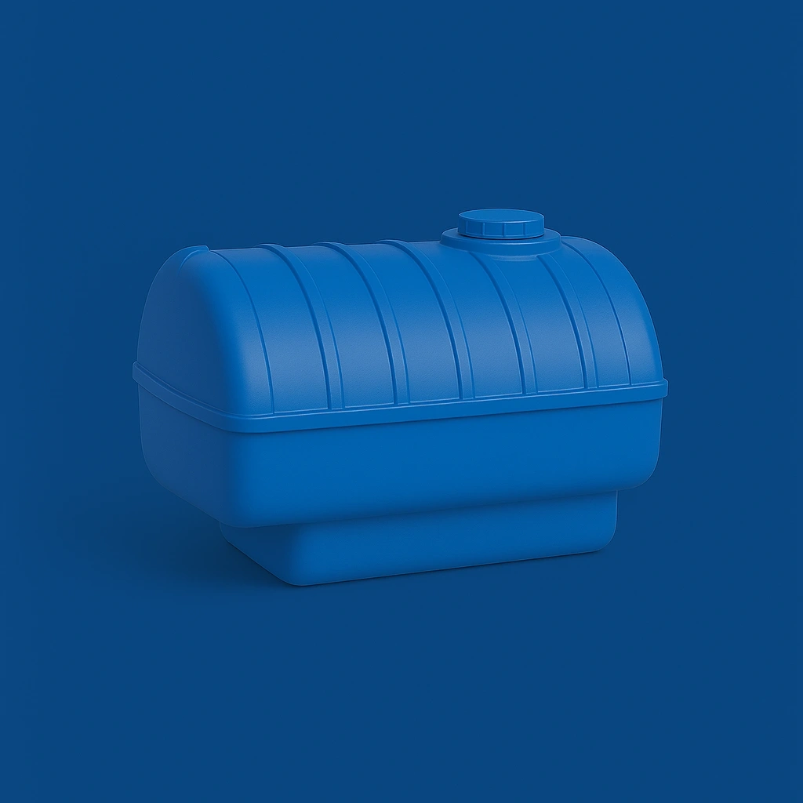

مشاوره فوری واتساپ
مشاوره فوری واتساپ
مخازن نیسانی (قابلحمل) طبرستان در حجمهای ۱۰۰۰ تا ۲۰۰۰ لیتر، با طراحی ویژه برای نصب روی وانت نیسان، مناسب حمل آب شرب و مواد شیمیایی هستند. این مخازن از پلیاتیلن مقاوم در برابر نور خورشید تولید میشوند و در حملونقل بینشهری بسیار پرفروش و کاربردی هستند. خرید مخزن نیسانی طبرستان با ارسال به پرند، رباطکریم و تهران از نمایندگی رسمی سالمی.

| ظرفیت | کد | طول | عرض | ارتفاع کل | ارتفاع بدون درب | عرض پایه | طول گلگیر | عرض گلگیر | ارتفاع گلگیر | افزودن |
|---|---|---|---|---|---|---|---|---|---|---|
| 1000 لیتر پشتپلهای | 3511351 | 141 | 121.5 | 80 | 68 | 92 | 67 | 21 | 68 | |
| 1500 لیتری نیسانی | 3531401 | 125 | 110 | 112 | 100 | 100 | 118 | 29 | 28 | |
| 2000 لیتری | 1701421 | 129 | 112 | 121 | 109 | 97 | 99.5 | 29 | 29 | |
| 2000 لیتری گازسوز | 1731421 | 150 | 123 | 153 | 125 | 104 | 164 | 27 | 27 | |
| 2000 لیتری کوتاه | 1716421 | 159 | 91 | 159 | 95 | 210 | 210 | 28 | 28 | |
| 2000 لیتری بلند | 1731422 | 177 | 126 | 152.5 | 122.5 | 99.5 | 164 | 20 | 27.5 |
کارشناسان ما آماده پاسخگویی و راهنمایی برای انتخاب بهترین مخزن آب متناسب با نیاز شما هستند.
این مخازن با ابعاد و طراحی مخصوص، بهگونهای ساخته شدهاند که بهراحتی روی وانت، نیسان، مزدا و کامیونت قرار میگیرند و گزینهای عالی برای حمل آب و مایعات در مناطق روستایی، باغها و پروژههای سیار هستند.
مدلهای کوتاه ارتفاع کمتری دارند و برای نیسان با اتاق محدود مناسباند. مدلهای بلند ظرفیت بیشتری دارند و مدلهای گلگیرخور، بخش فرورفته برای جایگیری روی گلگیر دارند که موجب ثبات بهتر مخزن هنگام حمل میشود.
بله، برخی مدلها را میتوان با ضخامت تقویتشده یا در رنگهای خاص تولید کرد. برای سفارش اختصاصی لطفاً با کارشناسان ما تماس بگیرید.
مدلهای ۱۰۰۰، ۱۵۰۰ و ۲۰۰۰ لیتری پشت نیسانی و گلگیرخور بیشترین استقبال را دارند و برای بسیاری از مشاغل سیار و کشاورزی قابل استفادهاند.
بله، کلیه سفارشهای مخازن نیسانی از طریق باربری معتبر و بیمهشده به تمام نقاط کشور ارسال میگردند. تحویل در محل پروژه نیز امکانپذیر است.